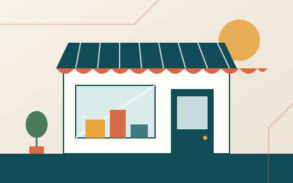
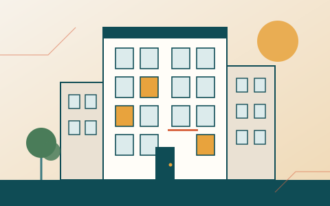

PME & TPE
Le compte rendu de réunion
Avant : environ 45 min de rédaction à la main
5minde relecture et d'ajustements
Vous gardez la main : c'est vous qui validez et envoyez.
L'IA, version humaine
Je libère vos équipes des tâches chronophages pour qu'elles se consacrent à ce pour quoi vous les avez recrutées : leur expertise, leur expérience, la relation avec vos clients. Et à vous qui dirigez, je rends le temps de prendre du recul.
Ce qui peut être confié à la machine, nous le choisissons ensemble — avec vos équipes, jamais à leur place. Il se trouve que mon outil, c'est l'intelligence artificielle, au service des PME, des collectivités et des syndics des Alpes-Maritimes et de Monaco.
LE VRAI FREIN
Ce qui freine l'adoption de l'IA n'est presque jamais technique. C'est la peur de perdre la main sur son métier, l'habitude, ou la crainte de déléguer une décision qui doit rester la vôtre. C'est ce frein que je traite avant de parler d'outils.
On ne commence jamais par l'outil. On commence par ce que vous essayez d'accomplir — et ce qui vous en empêche aujourd'hui.

PME & TPE
Diagnostic de vos tâches chronophages, sans jargon technique.
Collectivités
Méthode adaptée à vos contraintes de gouvernance.

Syndics de copropriété
Diagnostic pensé pour vos gestionnaires, jamais pour les remplacer.
Un aperçu du quotidien
Trois exemples de tâches que l'on peut alléger, avec un ordre de grandeur du temps concerné. Chaque résultat est relu et validé par vos équipes.
PME & TPE
Avant : environ 45 min de rédaction à la main
5minde relecture et d'ajustements
Vous gardez la main : c'est vous qui validez et envoyez.
Collectivités
Avant : environ 20 min pour trier et rédiger chaque réponse
5minpour valider un brouillon préparé
La décision et la signature restent à l'agent.
Syndics de copropriété
Avant : environ 1 h 30 de saisie par lot de courriers
15minde vérification avant envoi
Aucun courrier ne part sans la validation du gestionnaire.
Ordres de grandeur illustratifs, variables selon votre contexte : ils se confirment ensemble, lors du diagnostic.
Faites glisser le curseur de « avant » vers « après » : le temps libéré par les tâches répétitives est rendu à la relation avec les copropriétaires.
Saisie, relances, courriers types
Comptes rendus, préparation de dossiers
Recherche de documents et d'informations
Échanges avec les copropriétaires
Sur une journée de 7 heures, avant : 3 h de saisie et relances, 1 h 30 de comptes rendus, 1 h de recherche, 1 h 30 d'échanges avec les copropriétaires. Après : 1 h de saisie et relances, 30 min de comptes rendus, 15 min de recherche, 5 h 15 d'échanges avec les copropriétaires.
Exemple imaginé pour illustrer l'idée, sur une journée de 7 h : ce n'est pas un résultat mesuré chez un client.
Tout dépend de votre point de départ. Mais dès les premières semaines, la démonstration concrète de ce que l'IA peut absorber comme tâches redondantes ou pénibles change quelque chose : vous vous recentrez sur votre métier, et bien souvent, ça redonne du cœur à l'ouvrage.
Aucune. Je suis là pour vous guider pas à pas, vous enseigner, et vous faire prendre goût à un outil qui va vous faciliter le travail — pas pour vous transformer en technicien.
Beaucoup de consultants IA partent de l'outil : où peut-on le brancher. Je fais l'inverse. Après plus de trente ans dans l'hospitalité — dont plusieurs années à l'étranger, à la tête d'équipes nombreuses sur des sites isolés, avec peu de ressources et aucune marge d'erreur — je n'apporte pas de solution « clé en main ». Chaque organisation a ses propres contraintes : c'est cette capacité à m'adapter, plus qu'un savoir-faire technique générique, qui fait la différence. J'écoute, j'analyse, et je construis avec vous un plan de déploiement étape par étape — parce que l'IA est là pour rendre l'humain plus efficace, jamais pour le remplacer.
Vous vous reconnaissez dans une de ces situations ? Le reste se joue dans l'échange, pas dans une brochure.